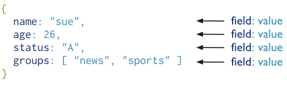

文档查询 - find方法
基本概念:MongoDB中查询检索数据时使用find命令
语法格式:
db.collection.find(criteria, projection);
参数说明:
criteria – 查询条件，文档类型，可选
projection– 返回的字段，文档类型，可选,若需返回所有字段，则忽略此参数
注意:
find命令两个可选参数，criteria为查询条件，projection为返回的字段，如果不传入条件数据库会返回该集合的所有文档
例如:

代码示例:
db.person.find();